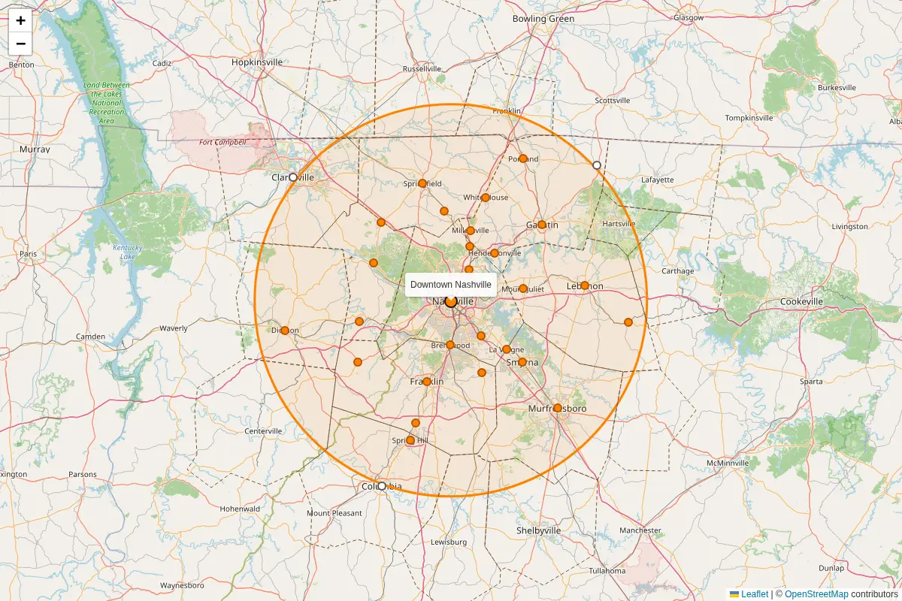

Where I work
Neighbors within about 40 miles of Nashville
I work all over Middle Tennessee, from downtown Nashville out about 40 miles in every direction. Close by or a little past the line, call me. I'm happy to drive out and meet you, or we can do it all online.

Circle: 40 miles around downtown Nashville. Distances are straight-line from downtown, so driving miles run a bit longer. Map © OpenStreetMap contributors.
Towns and how far
- Madison 7.5 mi · inside
- Brentwood 9.0 mi · inside
- Antioch 9.4 mi · inside
- Goodlettsville 11.7 mi · inside
- Hendersonville 13.3 mi · inside
- Mount Juliet 14.9 mi · inside
- Millersville 14.9 mi · inside
- La Vergne 15.0 mi · inside
- Nolensville 15.8 mi · inside
- Franklin 17.1 mi · inside
- Ashland City 17.5 mi · inside
- Greenbrier 18.3 mi · inside
- Kingston Springs 19.1 mi · inside
- Smyrna 19.2 mi · inside
- Pleasant View 21.4 mi · inside
- White House 22.3 mi · inside
- Fairview 22.7 mi · inside
- Gallatin 24.3 mi · inside
- Springfield 24.6 mi · inside
- Thompson's Station 26.0 mi · inside
- Lebanon 27.5 mi · inside
- Spring Hill 29.6 mi · inside
- Murfreesboro 30.9 mi · inside
- Portland 32.5 mi · inside
- Dickson 34.3 mi · inside
- Watertown 36.5 mi · inside
- Columbia 40.4 mi · just outside
- Westmoreland 40.5 mi · just outside
- Clarksville 40.8 mi · just outside
Counties
Fully inside the circle
Cheatham, Robertson, Davidson, Williamson counties
Partly inside (the circle crosses them)
- Wilson County about 96% inside
- Sumner County about 93% inside
- Rutherford County about 88% inside
- Dickson County about 85% inside
- Trousdale County about 67% inside
- Montgomery County about 46% inside
- Maury County about 44% inside
- Simpson (KY) County about 36% inside
- Hickman County about 25% inside
- Marshall County about 19% inside
- Logan (KY) County about 18% inside
- Bedford County about 11% inside
- Smith County about 8% inside
- Todd (KY) County about 4% inside
- Cannon County about 3% inside
- Macon County about 2% inside
Columbia sits just past the line at about 40.4 miles, and Clarksville at about 40.8. I still happily work with you there.